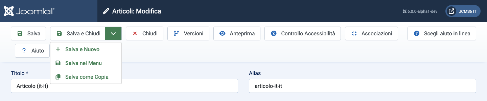
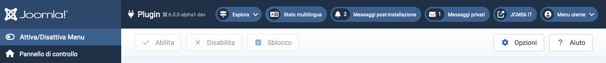

Le barre degli strumenti sono presenti su quasi tutte le pagine dell'Amministratore di Joomla! Le dashboard sono le eccezioni notevoli. Si trovano nella parte superiore della pagina immediatamente sotto la barra del titolo che contiene il nome della pagina e vari moduli di stato come la versione di Joomla e il link alla prima pagina.
Ogni pagina ha un insieme di pulsanti adatti al suo scopo. Alcuni sono comuni, come Salva, Annulla e Guida. Altri sono rari, come Ricostruisci e Elimina Orfani. Alcuni sono sempre attivi. Altri sono inattivi (grigi) fino a quando non viene selezionata una casella di controllo di un elemento della lista.
Se ci sono molti pulsanti, essi si disporranno su due righe. Alcuni esempi:

I pulsanti senza un'icona a forma di freccia verso il basso funzionano immediatamente. Quindi, Salva salverà la pagina e ritornerà con un messaggio di conferma verde o un messaggio di errore rosso. Si noti che, nella maggior parte dei casi, il pulsante Annulla chiuderà una pagina di modifica senza salvare alcuna modifica.
I pulsanti con un'icona a forma di freccia verso il basso hanno due funzioni. Seleziona l'icona e apparirà un elenco, come mostrato nello screenshot sopra. Ciò consente la selezione di azioni alternative. Seleziona il pulsante e verrà eseguita quell'azione. Quindi, Salva e Chiudi nell'esempio di screenshot.
Alcuni pulsanti appaiono solo in determinate circostanze. Ad esempio, il pulsante Controllo Accessibilità appare solo se il plugin System - Joomla Accessibility Checker è abilitato. E Associazioni appare solo su siti multilingue.
Per favore, esplora cosa fanno i vari pulsanti!

In questo esempio di barra degli strumenti i pulsanti sono grigi per indicare che sono inattivi. Diventano luminosi e attivi quando una casella di controllo degli elementi del Plugin viene selezionata per renderla pronta a essere abilitata, disabilitata o registrata. È possibile selezionare diversi elementi della lista per un'azione simultanea, che è lo scopo principale di questi pulsanti della barra degli strumenti. I singoli elementi possono essere elaborati con le icone in ciascuna riga (non mostrato).
Tradotto da openai.com